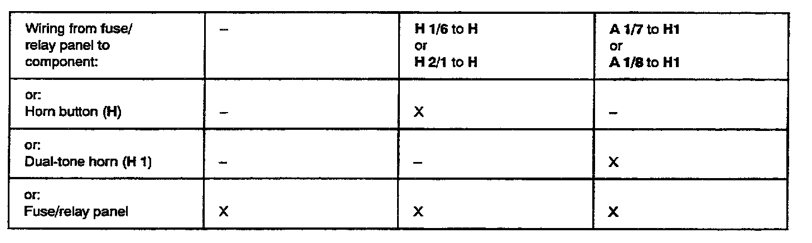

Horn: Testing and Inspection
Use tester VAG 1466 when troubleshooting dual-tone horn system!
Test conditions:
- Fuse No. 13 OK!
Troubleshooting preparations:
- Remove dual horn relay (J 4), stamped with production control number 53, from relay position 11.
- Insert test adaptor VAG 1466/3 into relay position 11.
- Connect VAG 1466 to test adaptor.
- Switch ignition ON
Test procedure information:
- Perform test steps according to table.
- If specified value/test result is obtained, continue troubleshooting with next test step (test result OK).
- If specified value/test result is not obtained, locate and eliminate malfunction using table.
- Use valid wiring diagram for checking wiring.
- Remove all test wires from sockets of VAG 1466 after each test step.
IF MALFUNCTION HAS NOT BEEN ELIMINATED AFTER PERFORMING TEST STEPS 1 THROUGH 3, REPLACE DUAL HORN RELAY (J 4)!
After repairing malfunction, check dual-tone horn system for proper operation.

Possible causes if specified value/test result is not obtained:
